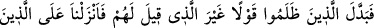

et-Teysîr’de âyete şöyle bir mânâ verilmiştir: Biz size bu nimetleri mübah kılıp bol
bol verdik. Hiçbir engel ve sıkıntı olmaksızın orada istediğiniz gibi yaşayın. Allah
Teâlâ, istifâdenin en önemli unsuru olduğu için burada “yemeyi” zikretmiş; bu nimetleri
onlara ganîmet sûretinde temlîk etmiştir.
Beyt-i Makdis’in yedi kapısı olup bunlardan bugün “Hıtta” ismiyle bilinen ikinci
kapıdan girilmesi emrolunmuştur. Veya Hârûn ve Mûsâ’nın ibâdet ettikleri,
İsrâîloğulları’nın namazlarında yöneldikleri kapı olan “Kubbe kapısı” da kasdedilmiş
olabilir.
“Secde” kelimesinden, hakîkî mânâsı olan “boyun bükerek ve tevâzu ile başınızı
eğerek girin” anlamı çıkarılabileceği gibi, şer’î mânâsıyla “Allah’ın sizi Tîh’den
kurtarmasına şükür olarak, secde ettiğiniz halde girin” anlamı da anlaşılabilir.
“Hıtta” kelimesi de iki mânâya gelmektedir. Birincisi; Allah’dan günahlarınızı
affetmesini isteyin, demektir. İkincisi ise günahları örten kelime-i şehâdeti söyleyin,
demektir. Eğer böyle yaparsanız daha önce buzağıya ibâdet etmek gibi hatâlarınızı
örteriz, onlardan dolayı sizi cezâlandırmayız.
“Hatâyâ” kelimesi doğrunun zıddı olan “hatîe” ( __WORD__ ) kelimesinin çoğuludur. Hatâ
yapanlar daha önce buzağıya tapan, sonra tevbe edenlerdir.
Muhsinler ise buzağıya hiç tapmamış olanlardır. Allah onlara fazl ve kereminden
dolayı daha çok sevâb verecektir. “Muhsin”; başkasına ve kendisine karşı güzel iş
yapan kimsedir. Muhsin; tevhîde olan inancını düzelten, nefsini iyi idâre eden, farzları
yapmaya ve şerleri bırakmaya yönelen kimsedir, şeklinde de târif edilmiştir. Yine başka
bir târifte “muhsin”, tabîatı itibariyle güzel olan, şerîatça övülen işler yapandır. Allah
Teâlâ “hıtta” ( __WORD__ ) demeseler bile, muhsinlerin fazlasıyla sevâb alacaklarını
bildirmiştir. Onlar üstelik “hıtta” ( __WORD__ ) demiş, istiğfâr da etmişlerdir. Bu yüzden
onların fazlasıyla ecir alacaklarında şüphe yoktur. Allah Teâlâ İsrâîloğulları’na
“başlarını eğerek kasabaya girmek” şeklinde kolay bir iş ve “hıtta demek” şeklinde
basît bir söz söylemelerini emretmiştir. Sonra da bu iki şeye karşılık günahlarını
affetmeyi sevâblarını da çoğaltmayı va’detmiştir.
59. Fakat zâlimler, kendilerine söylenenleri başka sözlerle değiştirdiler. Bunun
üzerine biz, yapmakta oldukları kötülükler sebebiyle zâlimlerin üzerine gökten acı
bir azâb indirdik.
Zulmedenler, kendilerine söylenen tevbe ve istiğfârı mâsiyetle ve hayırsız bir sözle
değiştirenlerdir. Muğâyeret olmadan tebdîl imkânsız olmasına rağmen; yâni farklı
cinsler olmadan değişmenin mümkün olmadığına karşın onların her konuda âyetin